Goal Patrol
Practicing Mindfulness Through Partnered Goal Setting, Tracking, and Achievement
Team Members: Kenny Li, Giulio Petrarchi, and Alexandra Huang (self- design, user testing, development)
Background
This web app was created during January - March of 2014. For the Intro to Human Computer Interaction Design course at UCSD, we were given a 10 week timeline to complete a web app centered around the theme of mindfulness, bringing it from start to finish through the human-centered design process. My role involved doing initial research and ideation, prototyping, to working on the front-end design aspects of the application (colors, formatting), and conducting user tests.
Ideation and Needfinding
I started my observations around a place familiar to me: inside the weight room at the UCSD gym. Specifically, I observed individuals utilizing the squat racks and their smartphones for checking their workouts as well as entering the weights they used for each set. I noticed that the majority of people either shared a squat rack and rotated with each set, or they had to wait until a squat rack opened up whenever someone finished their sets.
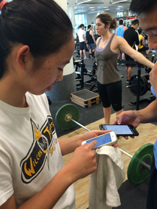 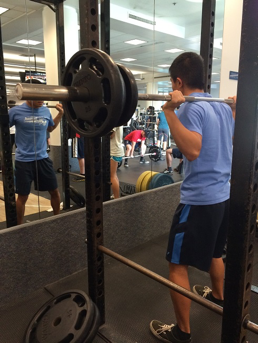The Problem
Within the weight room, all of the more popular options (such as the squat rack) tend to be filled, and thus people are stuck waiting for uncertain amounts of time. In order to figure out when the squat rack would be open, people would either have to ask the person currently using the rack for the number of sets they have left, or they would simply stand nearby and keep an eye on the person to see when they finished. We all felt that there was a definite need for some system of scheduling squat racks, and thus…
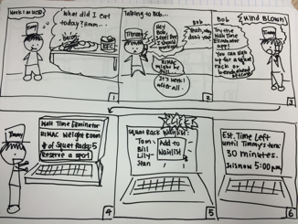 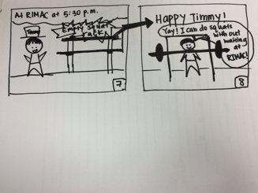
One of the storyboards I made for our squat rack scheduler. We storyboarded and even paper prototyped before realizing our app didn’t directly address mindfulness.
A Detour
We were so focused on this particular problem (partly because all of us used the weight room and had faced this problem ourselves before) that we didn’t realize that our app idea, which involved reserving a time to use various pieces of exercise equipment and being able to view open time slots, had diverged from the original theme of mindfulness. How did our app help people to be more aware of their own cognitive and emotional states?
(Hint: It didn’t.)
The (New) Problem
And thus it was back to the drawing board, quite literally. After further pondering on the subject of mindfulness, we came up with the idea of an app for increasing mindfulness in the context of goal-setting and subsequently achieving those goals. The problem we identified was that people often don’t achieve the goals that they set for themselves because they lack awareness and mindfulness in terms of their progress towards their goals; without reminders and constant motivation, it becomes really easy for people to fall off track and abandon the goals they set.
Our proposed solution, in the form of the app Goal Patrol, is to facilitate the goal-setting process by turning it into a sort of mutual exchange. Instead of the existing apps that simply allow you to set and track your own goals, Goal Patrol lets you set a goal for a friend who, in turn, sets a goal for you. This is meant to foster closer relationships between the users, since the person setting you a goal needs to know you well enough in order to know what kinds of goals would be worth working towards for you, and also increase overall awareness of your own cognitive and emotional states when you track your progress and thoughts as you work towards the goal.
Paper Prototyping

The paper prototypes were made with mobile-first design in mind because we figured that this app should be used on the go, generally at any user’s convenience, since people will want to record their progress towards their goals whenever they remember to.
Prototype Testing and Feedback
We received feedback based on Nielsen’s ten heuristics after getting several people from other teams in the class to test our initial paper prototypes (the ones about the gym area scheduling app), but due to time constraints we were not able to do a separate test of our Goal Patrol prototype. However, we applied the comments to our new prototype as well; our previous prototypes did not have clear navigational controls, such as a menu button or back button, so our Goal Patrol paper prototype included back buttons on every screen as well as a menu button on the user’s home page. There were also issues with understanding what to do on each screen, so we accounted for that by adding the help icons on the goal-setting page to give tips on how to structure the goal.
Making Goal Patrol
For the coding of the application, we decided to make it a mobile web application due to the time constraints of the class (we had about three weeks for this portion). The application was implemented with Handlebars templates on the front end and Express, Node, and MongoDB on the backend; the application itself was deployed using Heroku. I worked primarily on the front end, which included picking out the color scheme and font for the application and other aspects of the styling, as well as tweaking the positioning and layout of the components on the pages.
Initial Usability Testing and Feedback
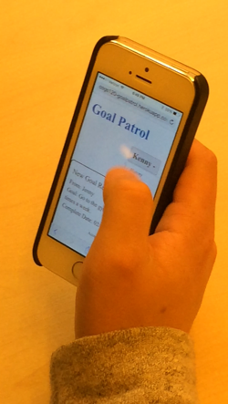
User 1 did not realize that the Goal Patrol name in the upper left was clickable and led back to the home page.
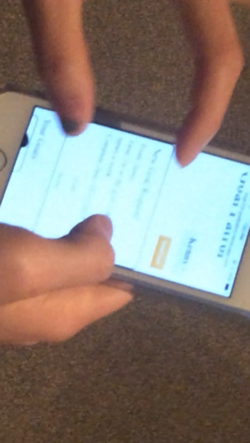
User 2 did not understand the content of the home page and one of the button names.
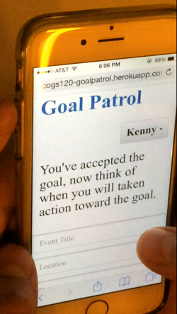
User 3 could not remember the goal accepted from the previous page and thus had trouble planning for it.
Once we had a mostly functioning version of the Goal Patrol application, we conducted three user tests and collected feedback. I took notes and observed while the users interacted with the application on their smartphones. We recorded each session, allowing us to go back and review anything we may not have noticed during the actual tests.
During the tests, we noticed users’ pain points with the flow of the application, since there were some pages they could not figure out how to go back from, as well as other aspects of the page that were not easily understandable with the given information. We also took suggestions for features into account, such as the feature to send inspirational pieces such as quotes, personalized messages, and videos to friends using the app to keep them motivated while working towards their goals. The comments led to rearrangement of buttons on the pages as well as the addition of a “Help” page, shown below.
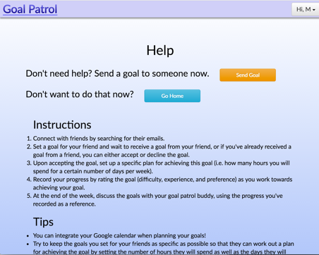Online Testing
After the initial usability tests, we performed A/B testing using Google Analytics in order to see where users clicked to get to the home page; we wanted to see if having the “home” option in the dropdown menu was useful, or if having the clickable “Goal Patrol” logo in the upper left was enough. The testing was conducted over the span of three days, during which we had 36 unique visitors to the website. The results indicated that most users did not use the dropdown “home” option and went for the single click on the logo to return to the home page. Based on these results, we decided to make the clickability of the logo more obvious so that users can directly go back without having to make the extra click by opening the dropdown menu.
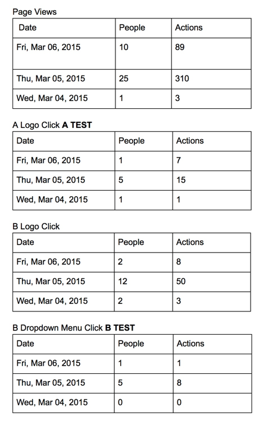
Final Application
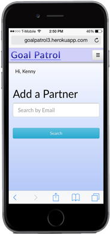 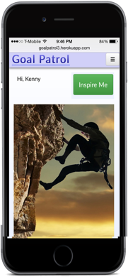 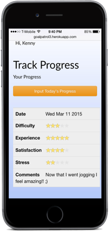 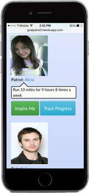
Based on the usability tests as well as the online testing results, we added a line underneath the Goal Patrol text in the upper left in order to indicate that it is clickable. We also enlarged some of the buttons to make it easier to click on a mobile device, and edited wording for clarification where necessary. The final color scheme that was picked was meant to mimic the gradient of the sunrise to give the users inspiration.
The Takeaway and Future Improvements
Given more time, it would have been a good idea to perform further rounds of usability tests with the application in order to determine whether or not the changes we made after the first usability tests solved the problems the users had with understanding our application. I learned that visual design sensibility takes time to develop, as I personally had a lot of trouble with finding a suitable color scheme as well as with the layout. For future improvements, I would want to revamp the color scheme and visual aspects of the application, perhaps based on color psychology so that the color can help with motivation. There were also a couple of features we did not manage to implement, such as uploading pictures and videos to send as “inspirational pieces” to friends using the app.
Website Link: